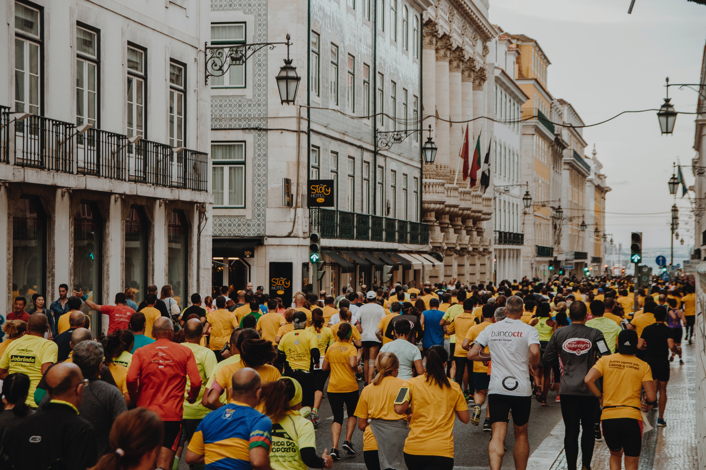
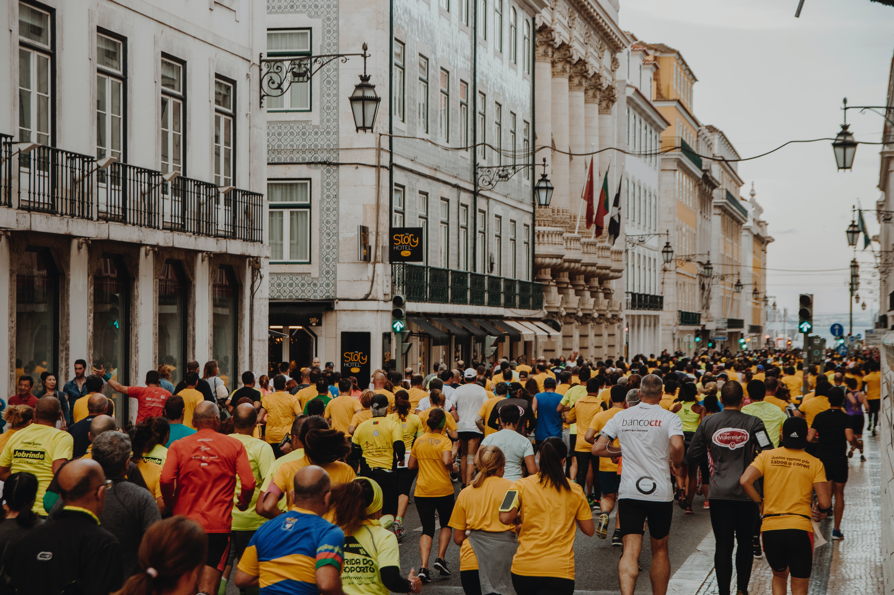
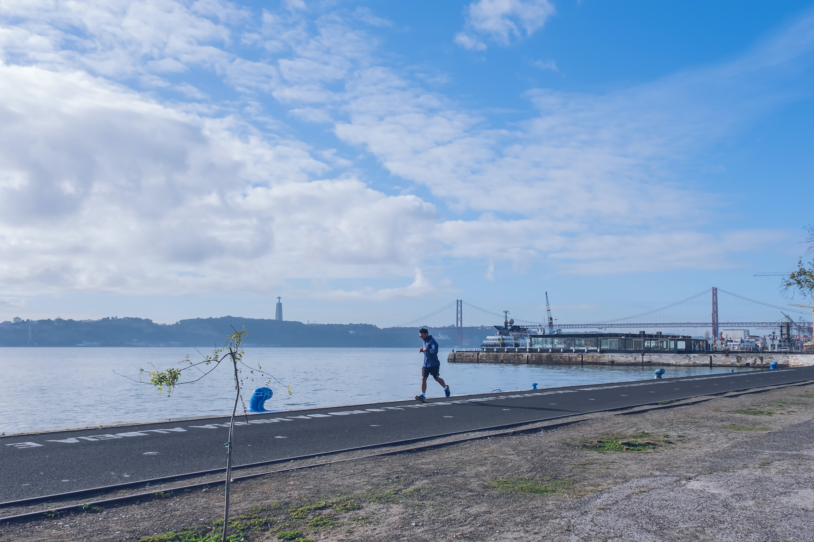

Lisbon Fundraising Event 2018
Picture providing by Yuri Catalano on Unsplash.
Picture providing by Yuri Catalano on Unsplash.
Picture providing by Freguesia de Estrela on Unsplash.
Picture providing by Andreas Brücker on Unsplash.

Picture providing by David Marcu on Unsplash.

We are a group of dedicated runners and novices alike, that like to meet up each week, plan sessions, celebrate achievements, meet for food and well, you know, the occasional run as well!